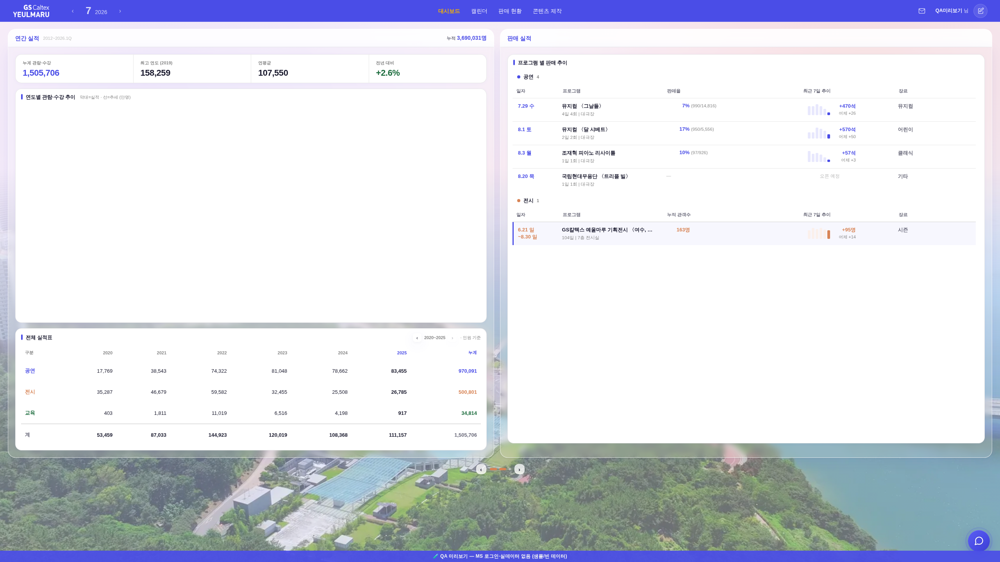
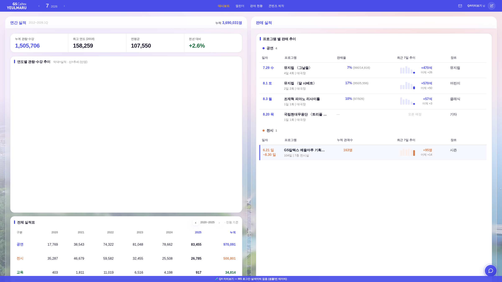

?qa=1#biz · tools/scratch/shot_bizzoom.mjs · QA 목데이터(차트는 외부 Plotly 차단으로 빈칸 — 확대율 비교엔 무영향)_bizZoomApply()가 대시보드(biz 모드)에서 #body-wrap에 zoom = window.innerWidth ÷ 1920(클램프 .75~2.2)을 걸었다.
목적은 "브라우저 줌 배율이 바뀌어도 규격이 따로 놀지 않게"였지만, 기준을 FHD(1920) 고정 리터럴로 잡는 바람에
FHD보다 넓은 창은 브라우저가 100%여도 첫 렌더부터 확대됐다(2560 → 1.333배 · 3440 → 1.79배 · 4K → 상한 2.0배).
반대로 1920보다 좁은 창은 100%인데도 0.75까지 축소됐다. 운영자 화면(2560폭)이 정확히 이 경우.
zoom:1.333 강제 확대 · 세로 190px 넘침(전체 실적표 「계」 행이 화면 밖)zoom 미적용(z=1) · 넘침 0 · 실적표 전 행 노출
zoom:1.25로 100% 구도 복원zoom:1.25 동일(전 요소 실측값 완전 일치 — 회귀 0)
기준 폭을 "1920"에서 "그 창의 브라우저 100% 기준 폭"으로 바꿨다.
window.outerWidth는 페이지 줌에 영향받지 않는 창 폭이라 outerWidth ÷ innerWidth ≈ 브라우저 줌 배율이 된다(_bizBrowserZoom()).
그 배율만 상쇄하므로 100%에서는 화면 폭이 얼마든 z=1(확대 없음 = 종전 유동 레이아웃), 줌을 내리면 그만큼 z를 올려 260731의 규격 고정은 그대로 산다.
창 테두리·스크롤바 오차(~1%)는 크로미움 실제 줌 단계 배열로 스냅해 흡수하고, 어느 단계와도 6% 밖이면 보정을 포기(z=1)해 오작동보다 무보정을 택한다.
#body-wrap zoom / 세로 넘침| 조건 | 전 zoom | 후 zoom | 전 넘침 | 후 넘침 | 판정 |
|---|---|---|---|---|---|
| 1440폭 · 100% | 0.75 (축소) | 1 | 133 | 431* | 확대·축소 해소 |
| 1920폭 · 100% (기준 화면) | 1 | 1 | 161* | 161* | 무변 |
| 2560폭 · 100% (운영자 화면) | 1.333 (확대) | 1 | 190 | 0 | 해소 |
| 3840폭 · 100% | 2.0 (확대) | 1 | 261 | 0 | 해소 |
| 1920창 · 브라우저 80% | 1.25 | 1.25 | 181 | 181 | 유지(동일) |
* 헤드리스는 외부 Plotly가 차단돼 차트가 안 그려지고 그 결과 _bizFitViewport(한 화면 맞춤 압축)가 돌지 않는다 — 1920 기준선에서 전·후가 같은 값(161)이므로 비교엔 무영향.
실사용에선 이 넘침을 차트 높이가 흡수한다.
check_design ✓(raw hex 1605/1605 무변·:root 2/0·신규 토큰 0) · check_refs ✓ · smoke 로그인 ✓(JS 회귀 0) · 콘솔 에러 0
확대를 걷어내면 2560×1440 같은 세로가 긴 화면에선 보드 아래에 여백이 남는다(차트 상한 _BIZ_CHART_MAX=560에서 성장 정지).
"남는 세로를 차트가 더 먹게" 할지(상한 상향) 여부는 어제 #520에서 막 조정한 차트 규격을 다시 건드리는 일이라 이번엔 손대지 않았다.